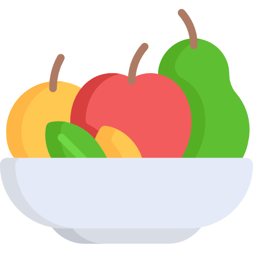
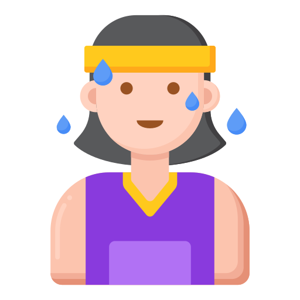
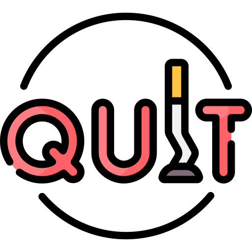
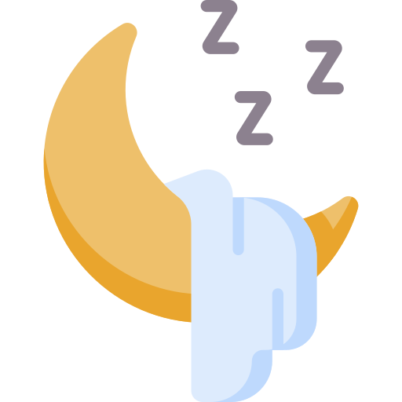
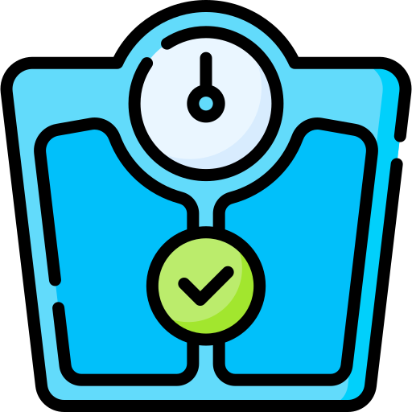
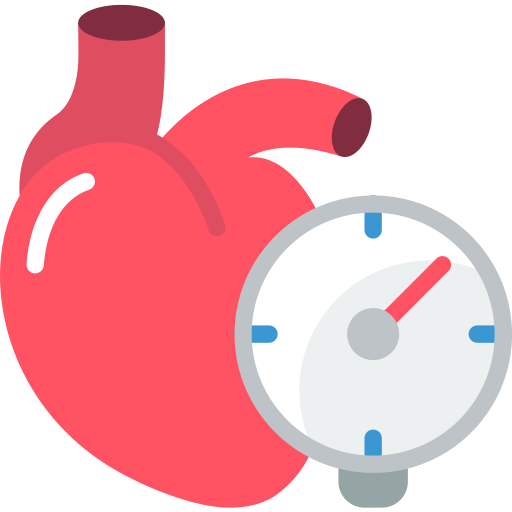
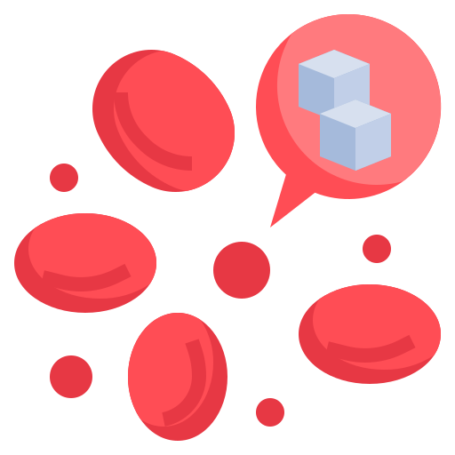
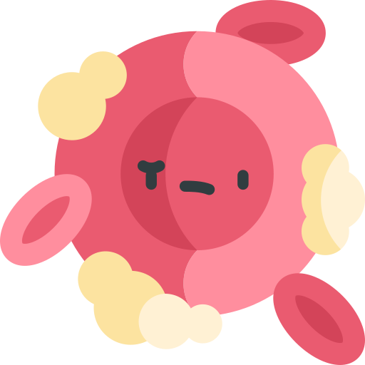

Understanding High Blood Pressure During Pregnancy
🌿 What is this / Why does this matter?
High blood pressure during pregnancy, also called hypertensive disorders of pregnancy (HDP), is becoming more common. In the U.S., it affects almost 1 in every 10 pregnancies and can increase the risk of complications for both mom and baby.
The good news? Many of the risk factors can be spotted early and improved through lifestyle habits—things like sleep, diet, and physical activity.
❤️ What the Study Looked At
Researchers from Mount Sinai studied more than 6,000 pregnant women to see how early-pregnancy habits—like how much they moved, slept, or smoked—related to blood pressure later on.
They used a simple framework from the American Heart Association called “Life’s Essential 8,” which focuses on 8 things that keep your heart healthy:
Life’s Essential 8
 Healthy Diet |
 Physical Activity |
 No Nicotine |
 Good Sleep |
|---|---|---|---|
 Healthy Weight |
 Balancing Blood Pressure |
 Managing Blood Sugar |
 Balancing Cholesterol |
🌸 What They Found
Women tended to fall into four lifestyle groups early in pregnancy:
🟢 Healthy Habits — baseline risk
Good diet, regular activity, no nicotine; normal BMI & BP{.meta} You’re already doing great! Staying active, eating balanced meals, and keeping your blood pressure healthy all support your heart and your baby’s growth.
🟡 Little Activity — no extra risk
Normal BMI & BP, but very little exercise{.meta} Even light movement like walking or stretching can help with energy and circulation. Try finding small, gentle ways to move that feel good each day.
🟠 Unhealthy Habits — ~1.5× higher risk
Tobacco exposure, low-quality diet, low activity (even with normal weight){.meta} Quitting smoking, improving your diet, and getting more rest are powerful steps for both you and your baby. Every small change adds up. It’s never too late to start fresh.
🔴 Snoring + Higher Weight — ~2.4× higher risk
Frequent snoring and higher body weight{.meta} If you often snore or wake up tired, it may be worth talking to your care team. Improving sleep and small lifestyle tweaks can make a big difference for your heart and blood pressure.
😴 Why Snoring Matters
It surprised even the researchers: women who snored regularly, especially those with higher body weight, were twice as likely to develop high blood pressure later in pregnancy. Snoring can be a sign of sleep-disordered breathing, which makes it harder for the body to get enough oxygen at night and can raise blood pressure.
💡 What you can do:
Tell your healthcare provider if you snore often or wake up tired.
Try sleeping on your side.
Focus on maintaining a healthy weight before and during pregnancy.
🧘♀️ Lifestyle Makes a Big Difference
Even for women with a normal weight, habits like smoking, low-quality diet, or being inactive increased risk. The study showed that everyday behaviors—not just medical history—play a powerful role in pregnancy health.
Simple ways to support a healthy pregnancy:
Aim for gentle movement each day (like walking or prenatal yoga).
Eat plenty of fruits, veggies, and whole grains.
Keep stress levels manageable: mindfulness, rest, and talking with others can help.
Avoid nicotine and secondhand smoke.
💬 What This Means for You
This research shows there isn’t just one path to developing high blood pressure in pregnancy.
For some, it’s linked to sleep and weight.
For others, it’s tied to stress and daily habits.
The key message: small changes early in pregnancy can help protect your heart and your baby.
If you’re pregnant, ask your provider about:
Early blood pressure checks
Sleep quality and snoring
Safe ways to stay active
Nutrition resources or prenatal programs
🌍 Social and Emotional Support Matters Too
Women with higher blood pressure risks were also more likely to experience stress, have less social support, or face financial challenges.
If you’re struggling, know that it’s not your fault. Stress and circumstances can make healthy habits harder. Asking for help from your care team or loved ones can make a big difference.